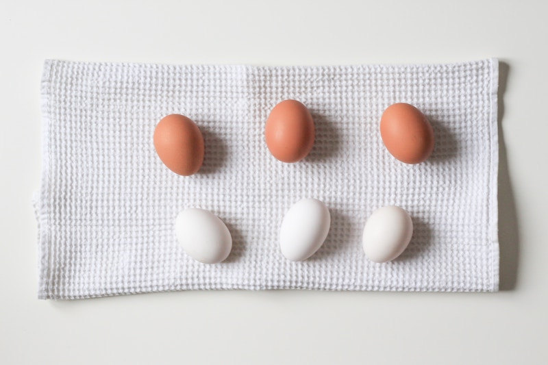

6 Main Psychological Blocks to Weight Loss
Losing weight and keeping it off is hard. No wonder most people who lose weight put it
right back on and find themselves at the same starting point every time they give weight loss a try.. Fitness trainers are accustomed to blaming this on an individual’s lack of discipline, however, the reasons for failure tend to be psychological.
In this post, we will be tackling why you might be falling into these destructive patterns, the signs to look out for, ways to dismantle them and how to clear your path towards progress. Addressing these psychological blocks is a surefire way to keep your emotions in check and bring you the results you want.
Psychological blocks to weight loss stem from:
1. Emotional Eating (i.e., Looking to Food for Comfort)
2. Constantly comparing yourself to others
3. Impatience
4. Stress
5. Depression
6. Self-Criticism
Emotional Eating (i.e., Looking to Food for Comfort)
Emotional eating is eating to fulfill an emotional need rather than the growling in your stomach. It comes on suddenly when you’re stressed, bored, lonely or angry. It is a mechanism to cope with volatile emotions. Food was probably used to deal with trauma in your past. It thus serves as a source of comfort to deal with the on-going troubles in your life.
Photo by Icons8 Team on Unsplash
This pattern of eating to deal with your troubles never involves healthy foods but highly refined food such as chips, cakes, chocolate that provide no nutritional value whatsoever. Emotional eating only provides temporary relief and, in most cases, leads to feelings of regret upon completion. You can’t believe that you finished an entire tub of ice-cream within such a short period.
You get even more frustrated after a couple of hours as your hunger returns since the junk you ate provided you with no useful calories. And to compound that, your diet and weight loss plan seem to be thrown out of the window. You then decide to ditch your diet altogether and go back to binge eating because it feels like there’s no more hope.
Solution
Pay attention to the time you reach for your fridge or decide to buy yourself a pizza. Think. Ask yourself, are you really hungry or just bored? Book an appointment with a therapist to find the root cause of this emotional need.
Healthier avenues such as meditation, reading, listening to music, working out, playing a sport or even going outside for a walk can replace that temporary feeling of safety you get from junk food. These activities have better long-lasting effects, all without making you feel sick or putting on the extra weight.
Constantly Comparing Yourself to Others
It’s only human to compare yourself to others. We’ve been comparing our looks, resources, and status for as long as we have been on this planet. But with the rise of social media and its perverse incentive structure, we are flooded with the highlight reels of our friends leaving us in a constant state of anxiety as it feels like our lives can never match up to what we see in front of us. No wonder so many people are depressed.

Photo by NordWood Themes on Unsplash
Stop wasting time comparing your weight loss journey with that of your friends or the pictures you see on your newsfeed. This will steal your joy and happiness and make the hard work you’ve been putting in seem like a waste of time. You might even develop resentment for these people without understanding their own sacrifice because all you see if the final product, not the starting point. Constantly comparing yourself with others will only leave you in pain and misery.
Solution
Focus on the positives in your life. Think about how far you’ve come in your weight loss journey. Be appreciative of the little things: your able body, mind and your precious life. When you learn to be happy with the little you have, no matter what happens, your level of happiness will not change. That’s all that matters in the end.
When thinking about others, focus on positives: how hard they’ve worked to get to where they are, the sacrifices they’ve made, and seek advice on how you too can better yourself. Most importantly, don’t talk down on them. It will only make you bitter and put people off. Let the success of others serve as your motivation, not your roadblock. Be proud of yourself. The best person to compare to is the person you were yesterday. If you keep getting better each day, you’ve won.
You never know what people are going through. All you see on social media is their best self. If social media is bringing you down, delete your account. You might find peace. Remember, no one is perfect, no matter how perfect it might seem. Everyone is struggling with something.
Impatience
In the world we live in, everyone wants everything instantly. We expect our packages to be delivered within a day, our friends to respond instantly over text and our food to be at our doorsteps within 20 minutes. This is possible in some domains however weight loss is definitely not it. With you start your weight loss journey, you need to give it time as you will make mistakes along the way. If your timeframe is short, you set yourself for failure right from the beginning. You still haven’t found ways to motivate yourself to
lose weight.
Setting any long-term weight loss goal that is only a couple of months-long guarantees failure. It takes time to get into the groove and usually when you do you’re probably a couple of months in. Most people stick to a diet for a couple of months, get the body they want and before you know it is back to their old lifestyle and lose everything they’ve gained. Building long term habits take more than 20 days and need to be repeated consistently before the habits stick.
Solution
Set out to change your lifestyle and set a minimum of 2 years to reach that goal. Start by making small changes and gradually up those changes. This will give your body time to adapt to the changes and you the mental strength to keep pushing on when times are tough. You are guaranteed to be put to the test so when you are, you’ll have the strength needed to combat it.
When you play the long game, you won’t care about the fluctuations in your weight that might arise from a special occasion where cake is served. When you have a limited time frame, all these minor burps affect your thought process and can derail any progress as you feel guilty for slightly deviating from your diet for just a day.
Stress
No matter if you are rich or poor, skinny or overweight, male or female, life has its way of messing with us. The ups and downs in life naturally lead to stress. You can’t escape it. What you can do is learn to deal with it in a constructive manner. It’s only those that can find a way to work through their stress who are able to succeed with their long-term goals, be it life goals or weight loss goals.
Photo by Francisco Moreno on Unsplash
A big symptom of stress if the inability of getting a good night’s sleep. Lack of sleep tends to correlate with high levels of cortisol (stress hormone) and ghrelin (the hunger hormone). These hormones lead you down a path of eating highly refined junk foods. This, in turn, causes an increase in your body fat percentage, thereby, derailing your weight loss efforts. Don’t let stress lead you to overeat as a way to cope with the pressures of life.
Solution
The way to break the vicious cycle of stress eating is to find healthy ways to blow off steam. Outdoor activities, reading, meditation or simply going for a walk are some fun and healthy ways to find equilibrium in your life.
Stress management classes are also a great help. A study has shown that participants that
underwent stress management and combined it with a healthy lifestyle lost more body fat than those that simply focused on lifestyle changes. No matter what path you take, if you want to lose fat for the long term, you need to lower your stress.
Depression
No one knows whether depression causes weight gain or vice versa. What is clear is that depression leads to a lack of motivation, whether it is getting out of bed or sticking to a healthy lifestyle. It can also lead to anxiety, addiction, and isolation, which can derail your life.
Photo by Sydney Sims on Unsplash
Depression contributes to unhealthy eating habits, which in turn leads to bad decision making when it comes to picking the right foods to eat. Just like stress, we usually tend to favor highly refined foods when depressed leading only weight gain.
Solution
The best way to deal with depression is to seek therapy. It will help you discover the issues causing the depression in the first place. Working out in addition to helping you lose weight is also a great treatment for depression. It helps release endorphins that leave you energized and feeling satisfied. Introducing reading and meditation into your daily routine can also help combat depression.
The road to recovery differs greatly from person to person, however, if you leave you're depressed unattended, it can lead to serious health consequences, not including weight gain.
Self-Criticism
A negative body image can leave you unmotivated and unwilling to put in the work it takes to achieve long term weight loss. The same applies to an ‘all or nothing’ attitude. No amount of progress is ever good enough for you. Since you haven’t reached your final weight loss target, you look at yourself as a complete failure.
Photo by Craig Adderley from Pexels
This type of thinking leads to destructive patterns, dampens your confidence and derails any progress you’ve made so far. Since you feel like a complete loser, you binge eat unhealthy food as you’ve already given up. Repeatedly telling yourself you will always look terrible no matter the effort can keep you stuck in a sunken place forever.
Solution
Replace self-criticism with a ‘can do’ attitude. Use self-criticism in a positive way. Turn the pain you feel into motivation to keep fighting and pushing forward. Changes happen incrementally and never all at once. Take progress pictures every month to track your changes and be proud of all you’ve accomplished. Anything great takes time, so give yourself time to make mistakes. Learn from these mistakes. Write them down if need be, so you don’t repeat them.
Develop self-awareness to catch yourself falling into a negative zone so you can quickly bring yourself out of it. This is a long journey, so stop criticizing yourself when you’re only a few months into it. Take baby steps. Every single improvement matters. Having an ‘all or nothing’ attitude simply sets you up for failure. Everyone makes mistakes so be prepared for them. Include a friend on your journey. If that is not possible, find someone who you can talk to about your feelings.
If you are interested in figuring out where you stand in your fat loss journey, try out our body fat calculator. It is free to use and only requires your image as an input.
Get One Free Daily Motivational Quote to Your Email
Disclaimer
None of the website's content is meant to be taken as medical advice.
Speak to your healthcare professional for medical advice
I Lov Guitars Inc. will not be held liable for any claim, damage or other liability arising from, out, or in connection with using this web application and its content.
As a way of generating revenue to sustain this web app, estimatebodyfat.com is a member of Amazon’s Affiliate program and Clickbank's Affiliate Program and may earn a commission if you decide to buy any of the products recommended.
Credits
Special thanks goes out to Rachel Thomas and Jeremy Howard from Fast A.I. without whom this web application would not be possible. This application is built based on Jeremy's Bear Classifier WebApp. If you are interested in learning about Deep Learning and how you can use AI in your projects, Fast AI holds free courses anyone can take on their website. Please do give them a look if you are curious.
In addition to Fast A.I., this web application also uses the Croppie Plugin and custom made Haar Cascades .
I would also like to thank Dr. Jason Fung for writing such a life-changing book on solving Obesity and Harrison's Free tutorials on Haar Cascades
Images used on Estimate Body Fat have been obtained from Royalty Free Sites or purchased from Stock Repositories.
If you notice a discrepancy with anything, feel free to send me a message at contact@estimatebodyfat.com